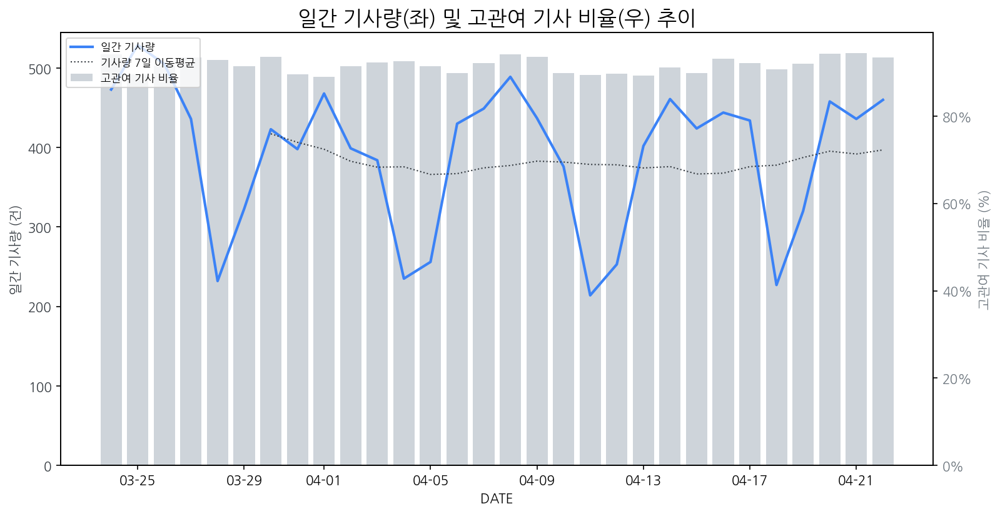

1
시장 활동 지표
기사량 추세 & 이상 징후 탐지
시장의 '전체 기사량'이 평소보다 비정상적으로 급증했는지(Spike)를 차트로 확인하고, LLM이 분석한 급등의 핵심 원인을 파악할 수 있음

고관여 기사란? 산업 연관 키워드로 수집된 기사들 중 디스플레이 키워드에 가중치를 반영하여 도출된 관련성 높은 기사
수집된 기사 수 (2026-04-22)
460
+8% WoW
기사량 변동 수준 (7일 이동평균 대비)
±6.7% 이하
2
오늘의 키워드
급격한 관심 ↑, 주목해야 할 키워드
1
oled
+9.9σ
QD-OLED의 광시야각 및 밝기 성능이 UL 인증을 통해 입증되며 시장 확대 기대감이 고조되었습니다.
Related Metrics
금일 언급량: 63, 전일 대비: +48
Interpretation
OLED 시장 경쟁 심화
Next Step
핵심 토픽 'OLED_Topic' 관련 신호입니다. 3번 섹션(키워드 감성분석)에서 해당 토픽의 감성 변동을 교차 확인하세요.
2
시야각
+5.5σ
삼성디스플레이 QD-OLED의 우수한 시야각 성능이 글로벌 인증으로 입증되어 프리미엄 시장 확대 기대감을 높였습니다.
Related Metrics
금일 언급량: 16, 전일 대비: +16
Interpretation
QD-OLED, 프리미엄 시장 경쟁력 강화
Next Step
'시야각' 관련 상세 기사 및 경쟁사 반응 모니터링
3
삼성디스플레이
+4.2σ
삼성디스플레이 QD-OLED, 광시야각 공인 인증 획득으로 기술 경쟁력 입증
Related Metrics
금일 언급량: 23, 전일 대비: +22
Interpretation
기술력 앞세워 시장 우위
Next Step
핵심 토픽 'OLED_Topic' 관련 신호입니다. 3번 섹션(키워드 감성분석)에서 해당 토픽의 감성 변동을 교차 확인하세요.
4
lg전자
+4.1σ
LG전자가 WIS 2024에서 AI 기반 혁신 디스플레이 및 IT, 에어케어 기술을 선보이며 주목받았습니다.
Related Metrics
금일 언급량: 21, 전일 대비: +7
Interpretation
AI 기술 경쟁력 강화
Next Step
'lg전자' 관련 상세 기사 및 경쟁사 반응 모니터링
3
실시간 Risk 키워드
경계해야 할 시그널 탐지
특정 토픽의 부정 감성 점수가 급등할 때 이를 즉시 탐지하고, "근거 기사" 링크를 통해 리스크의 실체를 빠르게 파악할 수 있음
키워드 분석 결과, 오늘은 걱정할 만한 하락 신호가 없습니다. (부정 언급량 변화: +1.5σ 이내)
4
주요 이벤트 모니터링
실시간 산업 동향 파악을 위한 주요 활동
최근 발생한 주요 기업들의 신제품 출시, 투자 등 주요 이벤트를 제공하여 매일 경쟁사 동향을 확인할 수 있음
삼성전자, 삼성디스플레이, LG전자, TCL 등 주요 디스플레이 기업들이 새로운 기술 공개 또는 관련 사업을 통해 시장 경쟁에 뛰어들었다. 이는 차세대 디스플레이 기술 주도권 확보를 위한 경쟁이 심화됨을 시사한다.
Impact
이러한 기업들의 신기술 경쟁은 차세대 디스플레이 시장의 빠른 성장과 기술 표준 형성에 영향을 미칠 것이며, 소비자들에게는 더 혁신적인 디스플레이 경험을 제공할 가능성이 높다.
Next Step
디스플레이 제조 기업은 자체 기술 개발 및 파트너십 강화를 통해 차별화된 경쟁 우위를 확보하고, 변화하는 시장 요구에 신속하게 대응하는 전략을 수립해야 한다.
삼성디스플레이가 QD-OLED 기술의 글로벌 시야각 검증을 완료하여 기술 경쟁력을 입증했다. 이는 B2B 모니터 시장 확대를 위한 중요한 발판이 될 것으로 예상된다.
Impact
이번 검증 완료는 QD-OLED 기술의 우수성을 객관적으로 증명하며, 고화질 및 뛰어난 시야각을 요구하는 B2B 시장에서 경쟁사 대비 차별화된 입지를 구축하는 데 기여할 것이다.
Next Step
경쟁사들은 QD-OLED의 시야각 성능을 넘어서는 기술 개발 또는 차별화된 포지셔닝 전략을 모색해야 한다.
LG디스플레이(LGD)가 1조원을 투자하여 6세대 OLED 생산 라인을 증설한다. 이는 주요 고객사인 애플의 OLED 물량 증가에 대응하기 위한 결정이다.
Impact
LG디스플레이의 6세대 OLED 라인 증설은 중소형 OLED 시장의 공급 능력을 확대하고, 특히 애플 아이폰 등 고부가가치 디스플레이 시장에서의 경쟁 심화를 야기할 수 있다.
Next Step
타 디스플레이 제조 기업은 LG디스플레이의 증설 계획을 주시하며, 애플과의 협력 강화 및 신규 고객 확보 전략을 더욱 고도화해야 한다.
삼성전자가 월드IT쇼 2026에서 인공지능(AI)을 기반으로 한 미래 일상 경험과 혁신적인 디스플레이 기술을 공개했다. 이는 AI와 디스플레이 기술 융합을 통한 새로운 소비자 경험 제시를 목표로 한다.
Impact
삼성전자의 AI 기반 디스플레이 기술 제시와 미래 일상 경험 홍보는 관련 디스플레이 기술의 발전 방향을 선도하고, AI 통합 디스플레이 시장의 성장 가능성을 시사한다.
Next Step
경쟁사들은 AI 기술을 디스플레이 제품에 효과적으로 접목할 수 있는 방안을 모색하고, 차별화된 AI 기반 디스플레이 솔루션 개발에 집중해야 한다.
카카오가 글로벌 게이밍 기어 브랜드 스틸시리즈에 투자했다는 소식입니다. 해당 이벤트는 'INVEST' 유형으로 분류됩니다.
Impact
이번 투자는 게이밍 시장의 성장과 함께 고품질 디스플레이에 대한 수요 증가를 시사하며, 관련 디스플레이 기술 및 제품 개발에 영향을 줄 수 있습니다.
Next Step
디스플레이 제조 기업은 스틸시리즈와 같은 게이밍 기어 제조사와의 협력 가능성을 모색하거나, 게이밍 경험을 향상시키는 고주사율, 저지연, HDR 등 프리미엄 디스플레이 기술 개발에 집중해야 합니다.